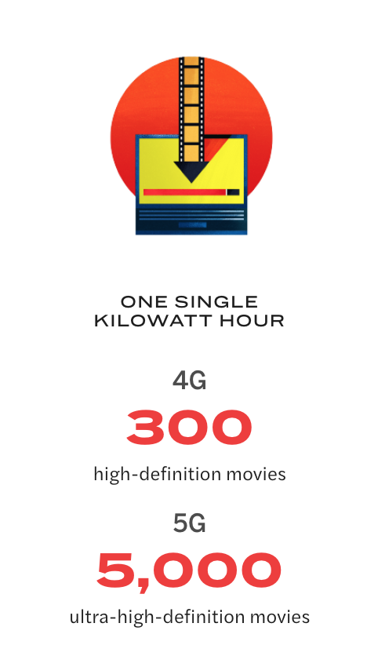

Les visions diffèrent concernant l'impact écologique de la 5G. Pour déployer son potentiel maximum la 5G doit réussir à réduire la consommation d'énergie. Des antennes aux data centers, le développement de la 5G risque pourtant de continuer à augmenter nos besoins en énergie. Des chercheurs canadiens estiment déjà que d'ici l'année prochaine la consommation des technologies d'information et communication représenteré 3.5% des émissions de carbone mondiale, davantage que le secteur de l'aviation. La 5G risque de continuer à faire augmenter ces prévisions.
Un article de l'Atlantic en collaboration avec Huawei explique que cela ne sera pas nécessairement le cas. Huawei prétend travailler sur des nouveaux composants qui permettraient d'utiliser moins d'énergie pour transmettre plus de données. L'entreprise a annoncé pouvoir télécharger 5000 films en ultra haute définition avec un kilowatt heure en 5G quand ce même kilowatt heure permettait de télécharger 300 films haute-définition en 4G. De nouvelles stations 5G déployées en Chine permettraient d'économiser 20% d'électricité par rapport aux anciennes stations 4G.
Huawei prétend aussi faire des efforts sur l'infrastructure réseau avec:
Pour conclure sur ce que Huawei pense pouvoir apporter écologiquement avec la 5G, un tweet présente une vidéo qui résume leurs actions et comment la 5G peut être bénéfique pour l'environnement.
⚡Les normes internationales pour la #5G exigent une réduction de la consommation d'énergie par rapport aux réseaux 4G actuels.
— Huawei France (@HuaweiFr) February 27, 2020
Découvrez dans cette vidéo comment la 5G permettra d'économiser l'énergie ⤵️https://t.co/A6YVmPprib pic.twitter.com/T8nPcZaGuz
La 5G s'accompagne d'une augmentation conséquente du nombre d'équipements et d'infrastructures. Pour les produire, des minerais qui vont bientôt s'épuiser sont nécessaires. Un chercheur au CRNS a conclu, après une étude qui calcule la quantité de métaux nécessaires pour soutenir nos modes de vie, que nous devrons extraire du sous-sol plus de métaux que l'humanité n'en a jamais extrait d'ici à 2050. Cela implique que la prochaine génération pourrait consommer autant qu'au cours des 70 000 dernières années. On peut rappeler aussi qu'il faut trois fois plus d'infrastructures pour la 5G que pour la 4G, le signal ayant moins de portée.
En conclusion, on peut reprendre l'interrogation de Hugues Ferreboeuf et Jean-Marc Jancovici, experts de la transition énergétique, dans une tribune du Monde:
« Ne sommes-nous pas en train de confondre, comme un gamin excité à la veille de Noël, ce qui est nouveau avec ce qui est utile, ce qui semble urgent avec ce qui est important ? Est-il normal, maintenant que la décarbonation est dans tous les esprits, que la mise en place de la 5G ne s’accompagne en France d’aucune évaluation mettant en balance le supplément de service rendu avec les inconvénients environnementaux additionnels – car il y en a ? Et, alors que les effets négatifs de la « prolifération numérique » sur le bien-être personnel – notamment des enfants – et le bien vivre collectif commencent à être bien documentés, devons nous en rajouter sans même prendre le temps de savoir dans quoi nous nous lançons ? »